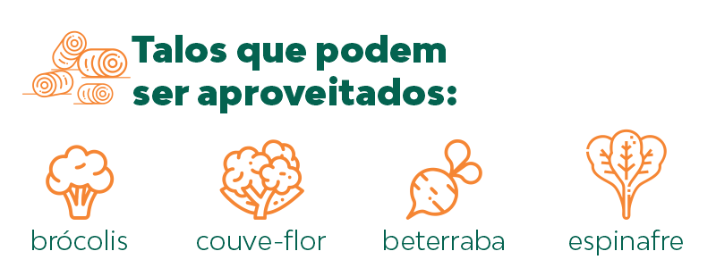

Hábitos sustentáveis estão muito mais relacionadas a uma vida sustentável, que é repensar práticas em todo o contexto da nossa vida, esse assunto nos trás uma reflexão que permite ter mais nitidez do impacto das nossas escolhas para o mundo. Assim então procurando buscar escolhas para melhor adaptação na vida sustentável
Temos várias formas de nos adaptarmos a essa prática, algumas delas são:
1- Transportes;
O uso de transportes movidos a combustível fóssil torna a vida menos sustentável, seja uma viagem curta de carro que facilmente poderia substituir a ir apé,de bicicleta, skate, etc, meios de transportes que não tem impacto ambiental.
2-Compras;
A conscientização antes de comprar é muito importante, pois a sociedade consumista é a maior inimiga da sustentabilidade, grandes quantias de produtos são adquiridas sem nenhuma necessidade trazenfdo assim a acumulação excessiva, Podemos então reduzir o uso de materiais que trazem alto impacto como o plástico.
3-Alimentação;
Optar por alimentos de produtores locais, restringir alimentos ultraprocessados, nem todos os alimentos vão para o lixo.
